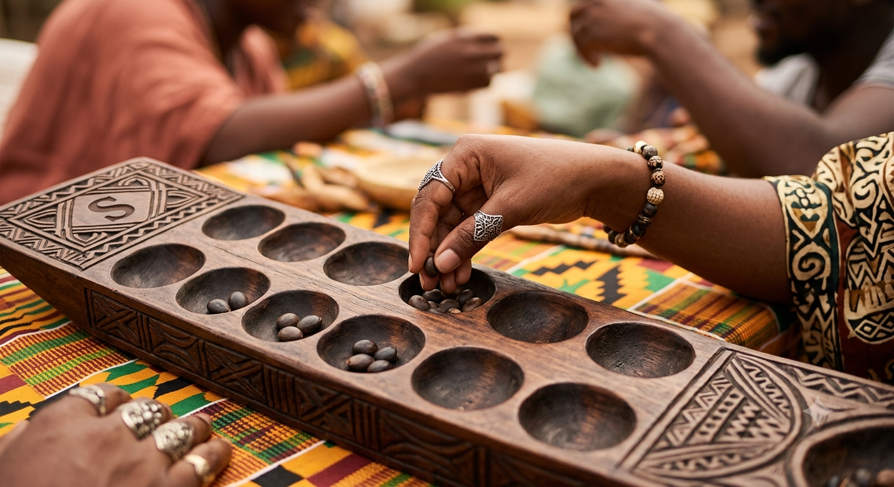

SONGO
Jeu de semailles traditionnel Ekang
👥 Jouer contre un ami
🤖 Jouer contre l'ordinateur
🌐 Jouer en ligne
Créer un salon
Rejoindre
Retour
© 2026 K-Songo (KoDesi Songo) · Crédits
Menu
Options
Credits
Mode de jeu
Joueur vs Joueur
Joueur vs IA
Appliquer & Nouvelle partie
JOUEUR 1 :
Graines
0
JOUEUR 2 :
Graines
0
Proposer une revanche
Quitter la partie en ligne